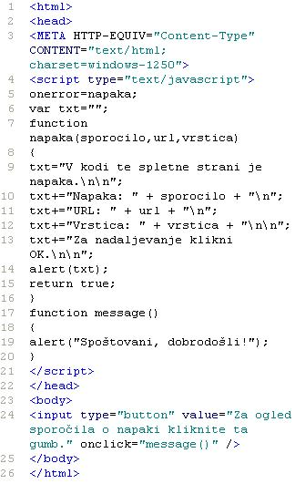
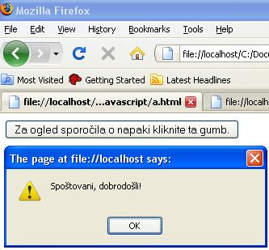

Modri z enako ravnodušnostjo prejema tako pohvalo kot tudi grajo. (Konfucij)
Slika 1 in 2: Dogodek "onerror" - koda in videz spletne strani  Slika 3 in 4: Dogodek "onerror" - koda in videz spletne strani 1. Izdelaj spletno stran, ki bo izgledala tako, kot kažeta sliki 1 in 2. Datoteko poimenuj "28apriimek.html". Ne pozabi na konènico ".html". Spletno stran si obvezno oglej v brskalniku "Mozilla Firefox". 2. Izdelaj spletno stran, ki bo izgledala tako, kot kažeta sliki 3 in 4. Datoteko poimenuj "28bpriimek.html". Ne pozabi na konènico ".html". Spletno stran si obvezno oglej v brskalniku "Mozilla Firefox". POZOR: Najprej NATANÈNO izdelaj vajo v tej uèni enoti in jo pokaži profesorju, nato zapiši odgovore na spodnja vprašanja. 2. V kodo primera v tej uèni enoti vstavi spodaj navedene komentarje na ustrezna mesta, ki jih ti komentarji pojasnjujejo. //Napoved in inicializacija spremenljivke tipa nis ali string. //Koda za vstavljanje gumba na spletno stran. //Funkcija, ki ne potrebuje argumentov. //Klic funkcije, ki ustvari sporoèilno okno. //Funkcija, ki potrebuje tri parametre ali argumente. 3. Kodo primera v tej uèni enoti spremeni tako, da bo stran vsebovala še en gumb. S klikom na ta gumb se bo odprlo še eno, torej novo sporoèilno okno s sporoèilom: "Namen te uène enote je spoznavanje naèina za iskanje napak v JavaScriptu". 1. Vprašanja za usmerjanje pozornosti in usvajanje novih besed: 1. Kdaj se sproži dogodek "onerror"? 2. Kaj nam pove prvi parameter funkcije, ki javi napako v kodi? 3. Kaj nam pove drugi parameter funkcije, ki javi napako v kodi? 4. Kaj nam pove tretji parameter funkcije, ki javi napako v kodi? 5. Kako lahko še drugaèe imenujemo parameter? 2. Zapiši od ene do pet kljuènih besed, ki povzemajo vsebino te uène enote. 3. Vprašanja za razmislek in povezovanje z lastno izkušnjo: 1. Kako smo imenovali v primeru na sliki 1 funkcijo, ki javi napako v kodi? 2. Kakšna je vrednost prvega parametra funkcije, ki javi napako na slikah 1 in 2? 3. Kakšna je vrednost tretjega parametra funkcije, ki javi napako na slikah 1 in 2? 4. V kateri vrstici je prišlo do napake v zgledu na slikah 1 in 2? 5. Opiši, do kakšne napake je prišlo v zgledu na slikah 1 in 2. 6. Kje je razlika med kodo na sliki 1 in kodo na sliki 3? 7. Zakaj je izgled spletne strani na sliki 4 drugaèen od tistega na sliki 2? 4. Domaèa naloga: 1. V zvezek prepiši misel, ki je zapisana na zaèetku uène enote z rdeèimi èrkami. Zabeleži nekaj lastnih misli, ki se ti utrnejo ob razmišljanju o njej. 2. Odgovori na vprašanja, na katere nisi uspel/a odgovoriti v šoli. 5. DODATNO DELO: 1. Izdelaj spletno stran, ki bo izgledala tako, kot kažeta sliki 3 in 4. Datoteko poimenuj "28cpriimek.html". Ne pozabi na konènico ".html". |